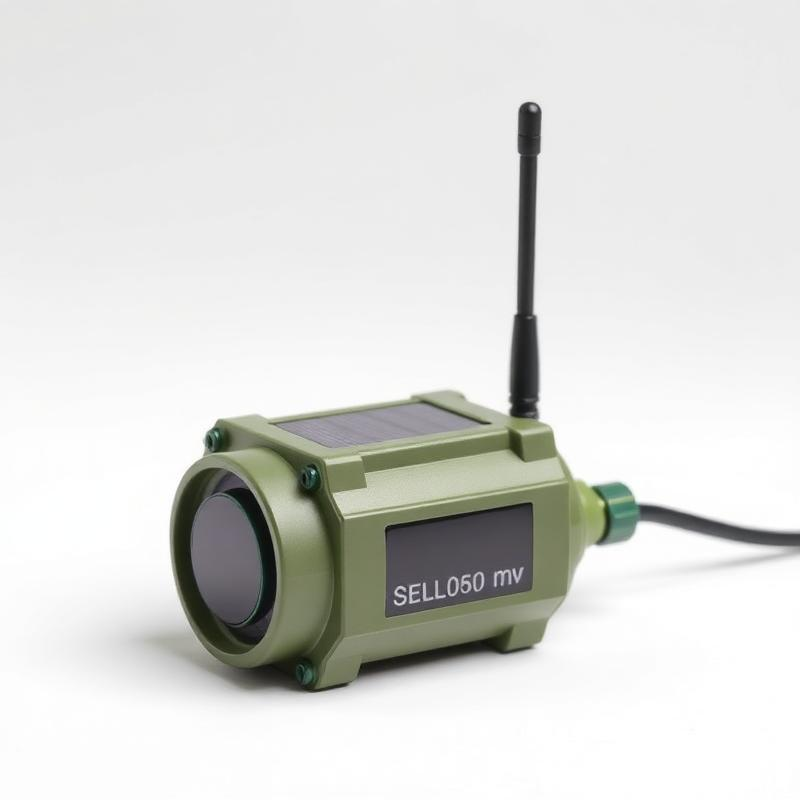
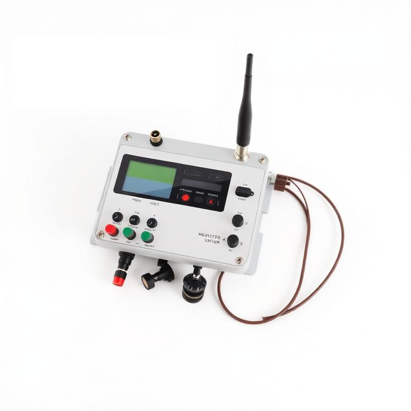
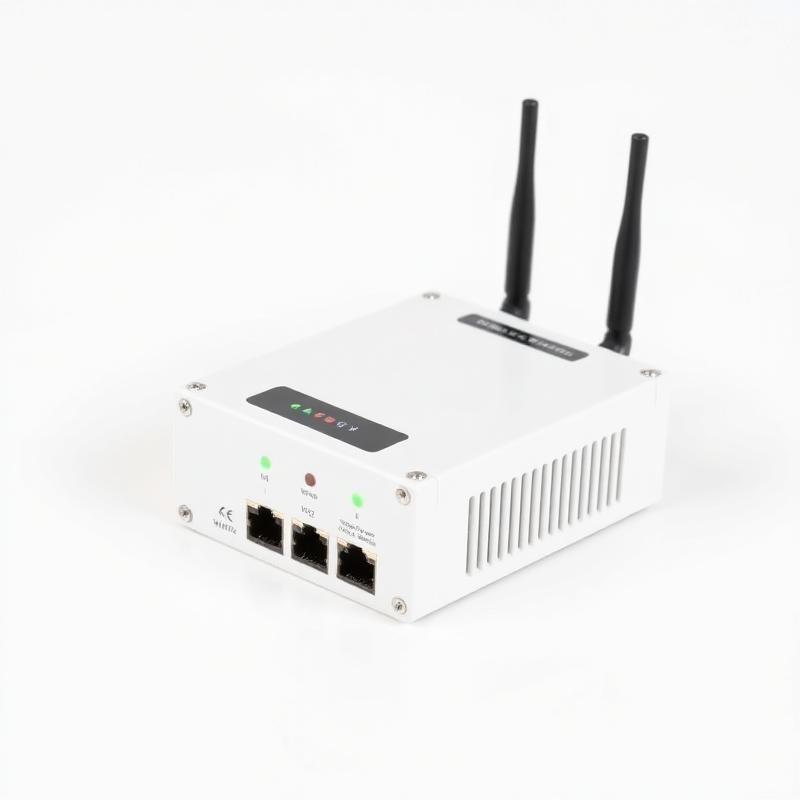

Our Hardware Catalog
Our Core Automation Devices
Customizable modules designed for reliability in Indian field conditions. Each device is configured specifically for your farm setup.

Actuator
Model: SPC-V3
Smart Pump Controller
Control your irrigation pump remotely with automatic scheduling and manual override capabilities.
- Remote ON/OFF control via mobile
- Automatic irrigation based on sensor data
- Manual override for emergency use
- Dry-run protection

Sensor
Model: SMS-L1
Soil Moisture Sensor Node
Measure soil moisture at root depth with long-range wireless connectivity.
- Accurate capacitive soil moisture sensing
- Long-range LoRa communication
- Solar-powered with battery backup
- Multi-depth measurement options

Sensor
Model: WMN-S2
Weather Monitoring Node
Track local weather conditions for intelligent irrigation decisions.
- Temperature & humidity sensing
- Rain detection for irrigation blocking
- Wind speed monitoring (optional)
- Solar radiation measurement (optional)

Controller Hub
Model: GCU-R4
Gateway / Control Unit
Central hub that collects sensor data and provides internet connectivity.
- Aggregates data from all field nodes
- Internet connectivity (4G/Wi-Fi)
- Local data storage for offline operation
- Mobile app and web dashboard access